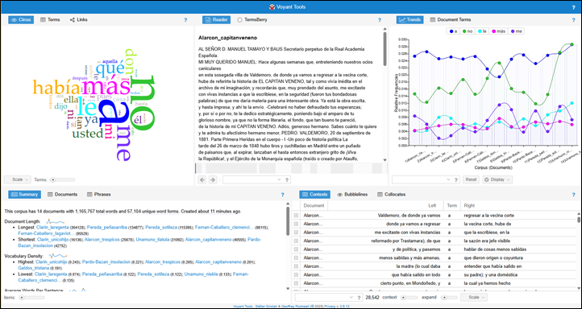
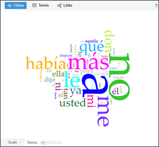
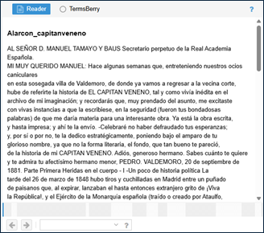
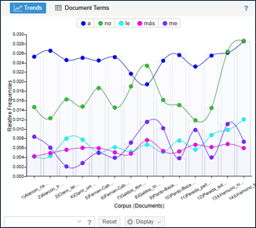
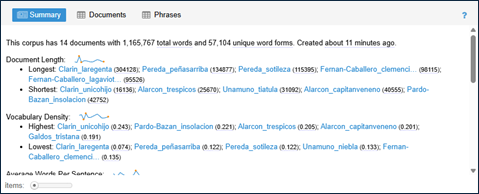
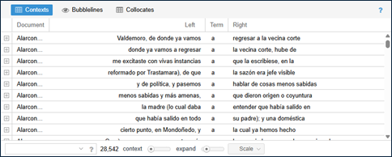

La interfaz de trabajo
La interfaz de Voyant Tools muestra por defecto cinco paneles con las siguientes herramientas.

Cirrus: visualiza en forma de nube de palabras aquellas de mayor frecuencia de un corpus o documento.

La nube de palabras sitúa las palabras de tal manera que los términos que aparecen con más frecuencia aparecen en el centro y tienen el tamaño más grande. A medida que el algoritmo recorre la lista y continúa dibujando palabras lo más cerca posible del centro de la visualización, también incluirá palabras pequeñas dentro de los espacios dejados por palabras más grandes que no encajan perfectamente. El color de las palabras y su posición absoluta no son significativos (si cambiamos el tamaño de la ventana o volvemos a cargar la página, las palabras pueden aparecer en una ubicación diferente).
Lector: muestra el texto para su lectura.

Es posible desplazarse hacia abajo dentro del lector de texto para obtener más contenido. También al pasar el cursor sobre una palabra se muestra su frecuencia en el documento. Además, se puede hacer clic en una palabra o buscarla en el cuadro de búsqueda para ver con qué frecuencia aparece en el corpus.
Tendencias: muestra el gráfico de distribución que representa las frecuencias de los términos en los textos de su corpus.

Cada serie del gráfico está coloreada según la palabra que representa. En la parte superior del gráfico, una leyenda muestra qué palabras están asociadas con ciertos colores. Se puede hacer clic en las palabras de la leyenda para cambiar su visibilidad. Al mantener el puntero sobre cualquier punto del gráfico, aparece un cuadro de llamada con información sobre el punto, incluida la palabra y su frecuencia.
Sumario: En esta ventana se ofrece una visión general de los elementos estadísticos más relevantes de nuestro corpus.

En la ventana podemos distinguir las siguientes secciones:
- Resumen de las características del corpus, incluyendo el número de documentos, el número total de palabras (tokens/forms) y palabras únicas (múltiples apariciones de palabras) en el corpus.
- Extensión del documento, muestra los documentos con mayor y menor extensión por número de palabras del corpus, apareciendo el número de palabras entre paréntesis después de cada título.
- Densidad de vocabulario, muestra los documentos con mayor y menor densidad de vocabulario (la relación entre el número de palabras del documento y el número de palabras únicas del documento. Cuanto más cercano a uno es el índice de densidad, mayor variedad de palabras en el documento.
- Promedio de palabras por oración, muestra los valores más altos y más bajos. A continuación, aparecen las cinco palabras más frecuentes en el corpus, las mismas que aparecen en Tendencias.
- Índice de legibilidad, estima lo difícil que es leer un texto. La estimación se hace midiendo diferentes atributos, tal como la longitud de las palabras, las longitudes de oración y el conteo de sílabas.
- Palabras más frecuente en el corpus
- Palabras diferenciadas (comparadas con el resto del corpus), muestra cuán relevante es una palabra para cada documento en el corpus
Contextos: muestra una concordancia KWIC (palabra clave en contexto).

La tabla tiene las siguientes columnas:
- Documento: muestra en qué documento se encuentra la palabra clave y los contextos
- Izquierda: palabras contextuales a la izquierda de la palabra clave (la clasificación por esta columna trata las palabras en orden inverso, de derecha a izquierda de la palabra clave)
- Términos: la palabra clave que coincide con la consulta de términos predeterminada o proporcionada por el usuario
- Derecha: palabras contextuales a la derecha de la palabra clave
Para seleccionar una herramienta alternativa, es preciso pasar el cursor sobre la barra gris en la parte superior de la ventana de Tendencias o Cirrus junto al símbolo ? hasta que aparezca un menú de iconos . Al seleccionar el botón ⊞ aparece un listado de todas las otras herramientas que pueden realizar diferentes visualizaciones y análisis de texto.